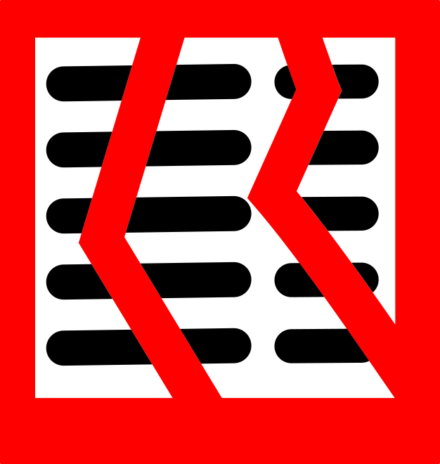

DivisiBill is simple in concept, it has two lists, participants and items. Each item has a description and a cost which is divided (perhaps unevenly) between one or more participants. The program does the rest, calculating tax and tip and dividing them fairly among the participants.
You can scan a bill and get items entered automatically, each item on a bill can be entered manually, or a combination of the two. Once entered you add a list of participants and indicate the division of each item between them.
There are over a dozen different pages in DivisiBill but the most important are Items and Totals. Items is where you list as many purchased items as you like and Totals is where the total amount for each of up to 10 participants is listed.
Other pages show a list of all possible people you might use on bills along with optional e-mail addresses, a list of possible venues with optional notes and locations, properties of the current bill, program settings and so on. The main pages are:
In addition there are a few other subsidiary pages reached from these.
DivisiBill uses a variety of icons to enable actions on various pages, for a list of these see icons